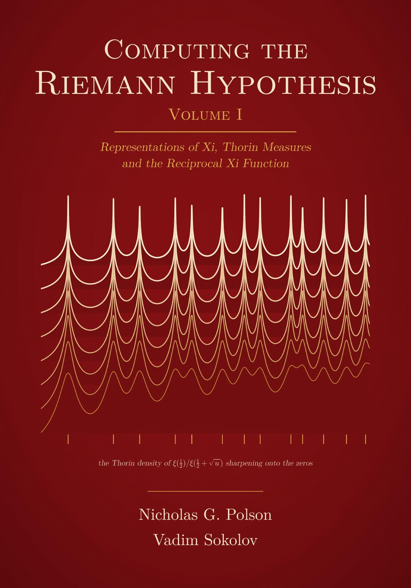

Computing the Riemann Hypothesis
By Nicholas G. Polson and Vadim Sokolov.


Volumes
- Computing the Riemann Hypothesis, Volume I: Representations of Xi, Thorin Measures and the Reciprocal Xi Function. PDF. DOI: 10.5281/zenodo.24565628. Paperback.
- Computing the Riemann Hypothesis, Volume II: Cauchy Deconvolution and Certified Computation. PDF. DOI: 10.5281/zenodo.24565632. Paperback.
- Computing the Riemann Hypothesis, Volume III: Is There a Path? Routes to RH from the Thorin Programme. PDF. DOI: 10.5281/zenodo.24565633.
Description
The Riemann Hypothesis can be restated as the positivity of a measure, the Thorin measure of a ratio of values of Riemann’s Xi function. This book computes that measure from Pólya’s integral for Xi, without primes or a list of zeros, in certified ball arithmetic, and asks what such computations can and cannot teach about the zeros.
A certified zero off the critical line would refute the hypothesis, but no finite computation can prove it. From the zeros verified up to height 3 × 10^12 the book certifies that the derivatives of the heat trace have the predicted signs up to order 1.16 × 10^25, and proves that such finite positivity tests cannot settle it: a perturbation of Xi with the same zeros below a large height, and zeros off the line above it, passes them. No proof of the hypothesis is claimed.
New results: the reciprocal Xi function at x to the power p is hyperbolically completely monotone exactly when the absolute value of p is at most one minus twice the largest zero angle over pi; at the basepoint one the Thorin density is certified smallest at the origin, so the shifted clock is a stable variable plus a generalized gamma convolution; between the basepoints one half and one the shifted clocks are almost generalized gamma convolutions, unconditionally; the clock of Pólya’s Bessel function is the hitting time of an explicit diffusion; adjacent real zeros of a polynomial cannot meet under the backward heat flow before an explicit time; and the Pólya law lies within 2 × 10^-6 in total variation of the ferromagnetic laws of Lee and Yang, a distance that is zero exactly under the hypothesis.
The book is in three volumes. Volume I, Representations of Xi, Thorin Measures and the Reciprocal Xi Function, develops the theory: the analytic and probabilistic representations of Xi, infinite divisibility, generalised gamma convolutions and the Bondesson hierarchy, the heat trace, the reciprocal zeta function, the basepoints and the critical strip, Dedekind eta and Dirichlet L functions, hitting times and Krein strings, extreme value and ferromagnetic laws with a two spin Lee and Yang form of the hypothesis, and Pólya and Haseo Ki on the zeros of entire functions. Volume II, Cauchy Deconvolution and Certified Computation, holds the computations: what computation can and cannot decide, Xi in ball arithmetic, the Thorin measure at finite resolution, the de Bruijn Newman flow and the barrier method in Thorin form, the Thorin phase diagram, Cauchy deconvolution from the level one measure down to the zeros (the backward Cauchy flow, the explicit formula as a deconvolution, particle filters and the Balazard, Saias and Yor criterion by Monte Carlo), Weil positivity in the windows of Yoshida and Zhu, truncations and friable approximants of Xi with certified real zeros, approximating clocks, and Ramanujan’s Delta in Thorin form. Volume III, Is There a Path? Routes to RH from the Thorin Programme, asks whether the programme leads to a proof, and collects the routes, the filters that test them, the quasi Riemann hypothesis, Iwaniec’s approach, the birth and death chain of the zeros, and the final assessment of what is proved and what is open.
The zero free half plane Re s > 7/8 for the Riemann zeta function and every Dirichlet L function is a theorem of OpenAI (2026), formalised in Lean. The book draws its consequences: a principal signal for zeta, the sliver and Mertens estimate, and the Thorin property at every basepoint above 7/8, with Volume III following the routes that start from it.
The scripts and data files behind the tables and figures are in the book’s repository https://github.com/VadimSokolov/computing_rh, listed in code/README.md.
How to cite
Polson and Sokolov (2026), Computing the Riemann Hypothesis, edition 2. Each volume has its own DOI: Volume I, https://doi.org/10.5281/zenodo.24565628; Volume II, https://doi.org/10.5281/zenodo.24565632; Volume III, https://doi.org/10.5281/zenodo.24565633.
@book{polsonsokolov2026computing_rh,
author = {Polson, Nicholas G. and Sokolov, Vadim},
title = {{Computing the Riemann Hypothesis}},
year = {2026},
edition = {2},
publisher = {Independently published},
doi = {10.5281/zenodo.24565628},
url = {https://vsokolov.org/books/computing_rh/}
}Main results
- Derivative signs of the heat trace up to order 1.16 x 10^25 (Volume I, Theorem 8.1.14, page 119): From the verification of RH to height 3 times 10^12, every derivative of the heat trace alternates in sign, equivalently the Williamson measures are positive, up to order 1.16 times 10^25, with the numerical inequalities of the proof certified in ball arithmetic.
- Bosch type theorem for the reciprocal Xi function (Volume I, Theorem 9.4.5, page 148): The reciprocal Xi function composed with the power x to the p is HCM exactly when the absolute value of p is at most one minus twice the largest zero angle over pi, so RH is the extreme case p equal to one.
- All zeros of Xi are real if and only if the reciprocal xi law is a GGC, and real and simple if and only if it is the hitting time of a string (Volume I, Corollary 19.18.1, page 584): RH holds if and only if \(L\) is the Laplace transform of a generalised gamma convolution with positive Thorin measure \(\sum_k\delta_{\gamma_k^2}\); the zeros are all real and simple if and only if \(L\) is the Laplace transform of the hitting time of a Krein string with positive mass; the same holds for any even real entire \(\widehat H\) of order below two with \(\widehat H(0)>0\).
- Phase diagram theorem, de Bruijn’s strip theorem in Thorin form (Volume II, Theorem 5.3.2, page 98): The set of points \((t,\alpha)\) where the shifted clock of the heat flow function is a generalized gamma convolution is carried along parabolas by the flow (de Bruijn’s strip theorem in Thorin form), the de Bruijn Newman constant is the minimum of \(t+2(\alpha-\frac12)^2\) over it, and RH holds exactly when the corner \((0,\frac12)\) belongs to it.
- The Thorin measure of reciprocal xi is absolutely continuous with the explicit density (1/pi) Re xi’/xi at every level from one (Volume II, Theorem 9.1.1, page 188): For every level \(\theta\ge1\) the measure \(\sum_\rho\mathrm{Cauchy}(\gamma_\rho,\theta-\sigma_\rho)\) has real analytic density \(\pi^{-1}\operatorname{Re}(\xi'/\xi)(\theta+iv)\), at \(\theta=1\) a gamma part minus a compensated prime sum, valid also at \(v=0\).
- Dichotomy for the band limited backward Cauchy flow from level one: convergence at level theta’ if and only if zeta has no zeros to the right of theta’ (Volume II, Theorem 9.3.1, page 193): The Fejér band limited backward flow from the level one measure converges to the level \(\theta'\) Thorin measure if \(\zeta\) has no zeros in \(\operatorname{Re}s>\theta'\), and has no measure limit if it has a zero there, so the Riemann hypothesis is convergence at every \(\theta'>\frac12\).
- Fifty three certified zeros on the critical line in a window at height 1e13 plus 100, above the verified range (Volume II, Result 11.8.7, page 297): A ball arithmetic scan certifies 53 sign changes of Hardy’s function, hence 53 zeros of zeta on the critical line, in a window centred at 1e13 plus 100, above the range verified by Platt and Trudgian; the count of zeros in the window and the real parts are not certified, and nothing is certified off the line. Status: computed.
- Total variation distance from the Pólya law to ferromagnetic laws is below two millionths, with no hypothesis (Volume II, Proposition 18.1.20, page 566): With no hypothesis the total variation distance from the Pólya law to the ferromagnetic laws is below 1.932 × 10^-6 by a certified computation in ball arithmetic and below 1.266 × 10^-4 by an explicit construction, below 6.024 × 10^-6 by a fitted law on a Bessel kernel (a note of Nicholas Polson), and it is zero exactly when the Riemann Hypothesis holds.
- Delta as the eighth power of the antipodal heat kernel of the sphere (Volume II, Theorem 21.4.1, page 665): The cube of the Euler product equals the antipodal Brownian heat kernel on the 2 sphere times 4 pi and the law of a maximum of three exponential type maxima, so Delta is that kernel to the eighth power.
- Ramanujan’s lost notebook formula as a density with an RH criterion (Volume II, Theorem 21.7.1, page 674): Ramanujan’s transformation formula for the digamma sum is the density of an explicit random variable Z built from two Polya variables and an EGGC factor, and RH holds exactly when every zero of its characteristic function in the strip where the imaginary part has absolute value below one is real.
- Gneiting and Polya criteria fail for every Gaussian smoothing of the second tail under RH (Volume III, Theorem 4.8.2, page 57): Assuming RH, neither Gneiting’s nor Pólya’s sufficient condition for positive definiteness holds for any Gaussian smoothing of the second tail of Nakamura’s measure, because of the oscillation at the zero ordinates. Status: conditional on the Riemann Hypothesis.
- Xi plus pole equals primes plus Gamma, an identity in law above level one (Volume III, Theorem 4.9.1, page 58): For sigma above one the characteristic function of xi at level sigma divides into an infinitely divisible zeta and Gamma part over an exponential part, giving the identity in law of Xi variable plus an exponential variable equal to a zeta law log variable plus a log gamma variable.
- Spline lemma, positive Thorin density from signed lattice patterns (Volume III, Theorem 5.7.1, page 77): For every m the signed combination of m exponentials with the B spline weights a_j equals the integral of log(1 + w^2/z) against an explicit nonnegative density, which extends the sine squared lemma (the case m equal to 1).
- Cancellation ledger for the Thorin density of xi (Volume III, Theorem 7.1.1, page 100): Above the largest real part of a zero of zeta, the Thorin density of the xi function is the sum of a nonnegative archimedean block, a positive constant at the origin and a 2 sin squared transform of the Chebyshev error, and the improper integral defining the last term converges.
- Fejér criterion for the Riemann Hypothesis at any level and height (Volume III, Theorem 7.4.5, page 112): The Riemann Hypothesis, and more generally the absence of zeros to the right of a level alpha, is equivalent to nonnegativity of an explicit finite prime sum plus elementary terms for all large cutoffs, at a single height t, with a Landau theorem converse.
- Unconditional bound on the central vanishing order with a correction for off line zeros (Volume III, Theorem 8.3.2, page 144): The GRH bound on the central order of L(s,chi_d) holds unconditionally after adding an explicit correction for the nonreal zeros off the critical line, which is small when the zeros up to a modest height are on the line.
- Compensated Thorin density positive outside windows of width 9.08 (Volume III, Corollary 9.2.3, page 166): For a level in (1/2, 1] the set where the compensated Thorin density is not positive has measure at most 9.08 times the count of zeros to the right of the level, and is empty up to 3e12 minus 5. Status: computed.
- Chebyshev’s Gamma ratio is a generalised gamma convolution (Volume III, Theorem 11.3.1, page 185): The reciprocal of Chebyshev’s 1850 Gamma ratio at the square root of u is the Laplace transform of a generalised gamma convolution with an explicit nonnegative Thorin density and tail constant 0.92129.
- A positive even kernel for Xi from Ramanujan’s combination (Volume III, Theorem 11.12.4, page 206): Xi is the cosine transform, divided by an explicit trigonometric factor, of a strictly positive even kernel built from Ramanujan’s combination with no derivatives of the theta function.
- Loss of linear reconstruction by Fourier division, factor exp(a Omega) (Volume III, Theorem 12.6.1, page 218): Recovering a band limited convolution of a measure from Cauchy smoothed data with noise by Fourier division amplifies the noise in L2 by exactly e to the a Omega over pi at worst, and every linear estimator that is exact on noise free data has the same worst case error, so with Omega = log X the factor is X to the a.
- Clean lattice criterion: RH if and only if Sigma(n) is at least n^6(2 log n + gamma) (Volume III, Theorem 13.6.2, page 227): RH is equivalent to Sigma(n) being at least n^6(2 log n + gamma) for all large n, or for all n in windows [N, N^(1+delta)] for arbitrarily large N, and under RH the margin is (1/2 minus F_0) n^4 with a sharp constant.
- Positive Maslanka criterion for RH (Volume III, Theorem 14.4.1, page 236): Replacing 1 over zeta by minus zeta prime over zeta in the Baez Duarte sequence gives a completely monotone sequence d_k whose remainder R_k is O(k to the minus 3/4 plus epsilon) exactly when RH holds, and O(k to the minus 9/16) unconditionally by the theorem of OpenAI (2026).
- One sided Landau criterion for the Maslanka sequence of xi (Volume III, Theorem 15.2.1, page 245): A zero free half plane Re s greater than theta is equivalent to either one sided bound g_k at most or at least plus or minus k to the minus 1 plus theta over 2 plus epsilon, and RH is the case theta equal 1/2.
- Riemann’s kernel smoothed into the Kolmogorov kernel (Volume III, Theorem 17.3.1, page 269): The positive even kernel built from the Kolmogorov law is twice Riemann’s kernel convolved with a pair of exponentially tilted indicator kernels, so its law is that of Riemann’s variable plus the difference of two independent tilted uniform variables.
- Pairing of the first 54 zeros of beta with zeros of eta (computed) (Volume III, Proposition 18.5.1, page 280): A floating point continuation in lambda maps the first 54 zeros of Dirichlet beta one to one onto the first 54 zeros of eta at w minus 1, 41 of zeta and 13 of 1 minus 2 to the 2 minus w, with an explicit permutation of ranks; it is not certified. Status: computed.
- Level alpha dictionary, no zero right of alpha is equivalent to a GGC Thorin transform (Volume III, Theorem 19.3.1, page 286): For an admissible L function and a level alpha at least one half, the shifted reciprocal Lambda(alpha)/Lambda(alpha+sqrt s) is a GGC transform if and only if there is no zero with real part above alpha, with an explicit Thorin density, extending the xi case to Dirichlet and elliptic curve L functions.
- Positivity of the level alpha functional on nonnegative test functions is equivalent to QRH(alpha) (Volume III, Proposition 19.5.3, page 291): QRH(alpha) for zeta holds exactly when W_alpha is nonnegative on nonnegative band limited test functions, and already when it is nonnegative on an explicit two parameter family, which at alpha one half is the nontrivial direction of Weil’s criterion.
- What a zero free half plane gives the Thorin programme (conditional on no zero right of theta) (Volume III, Corollary 20.3.1, page 310): If zeta has no zero with real part above theta, then at every level above theta the shifted reciprocal of xi is a GGC transform with a positive Thorin density that has its strict minimum at the origin, the mass deficit vanishes, and the compensated prime sum converges at a stated rate; the converse also holds. Status: conditional on zeta has no zero with real part above theta, for a given theta in [1/2,1).
- The curvature of minus log of the Xi function is smallest at the origin (Volume III, Theorem 21.5.4, page 341): Using the zero free half plane 7/8, the functional equation and prime powers up to 7, the curvature of minus log of Xi exceeds its value at zero by t squared over 10^5 for |t| up to 9 and by 3/500 on regular heights from 9 to 3e12 minus one, and under RH at every height.
- A computable tower base for RH (Volume III, Theorem 22.4.6, page 379): There is a computable real x_star between e and e^2, with no primitive recursive modulus of convergence, defined without the zeta function, such that RH holds if and only if Phi(n log x_star) is nonnegative for all positive integers n, with excursions of exponential rate exactly Theta minus one half if RH fails.
- Certified window, Phi positive for u up to 104.86604 (Volume III, Theorem 22.5.11, page 389): Unconditionally and certified in ball arithmetic, Phi(u) is positive for 0 < u <= 104.86604, so the sharp one sided Riesz mean bound holds for x up to 3.4893 times 10^45.
- Window criterion for the Riesz mean (any window exponent c greater than 1) (Volume III, Theorem 23.3.2, page 418): A one sided bound G(x) at most K(Y) x^theta on windows [Y, Y^c] for arbitrarily large Y, with log K(Y) of order o(log Y), gives a zero free half plane Re s greater than theta, with an explicit liminf at each zero.
- A finite height bound for the signed combination (Volume III, Theorem 23.3.9, page 422): Given the zero free half plane 7/8, net multiplicity zero for zeros above Re s equal sigma up to height x^{1/4} (and n(beta) at most 0 at real beta above sigma) gives R_{q,d}(x) at most C x^sigma log(2qd), so a rectangle of height Y^{3/8} decides the window [Y, Y^{3/2}] at the exponent 1/2.
- Exact 2 adic valuation of the lemniscate sine coefficients (Volume III, Theorem 23.10.4, page 449): For every n congruent to 1 mod 4 the coefficient a_n of the lemniscate sine equals 2 to the power (n-1)/2 times an odd integer, proved with divided power algebra modulo 2 and recomputed for n up to 1201; the book did not check whether it is in the literature.
- Sawtooth identity for the Riesz statistic (Volume III, Theorem 23.10.14, page 455): The Riesz statistic of the von Mangoldt function satisfies the exact identity X S(X)/2 + Q(X)/2 = W(X) with Q a nonnegative sum of parabolic sawtooth terms and W the logarithm of a superfactorial, which gives the asymptotics of Q through the Barnes function.
- The Wald couple of xi, with the Pólya variable and the clock (Volume III, Theorem 23.12.4, page 488): Without any hypothesis the Pólya variable X and the doubled clock tau of xi form a Wald couple with equal variance but different laws, and RH is exactly the statement that tau is a generalised gamma convolution.
- The one sided bound for a pair is equivalent to vanishing net multiplicities off the line (Volume III, Theorem 23.13.7, page 507): When the two functions of N_kappa have no zero in (0,1), the one sided bound for the weighted prime sum is equivalent to every zero off the line having net multiplicity zero, and to nonnegativity of the slack, without proving GRH.
- Price of the prime portfolio of calls as a damped sum over the zeros (Volume III, Theorem 24.3.1, page 519): The Black and Scholes price of the portfolio of calls struck at the prime powers equals the main term plus an entropy term plus the sum over the zeros of zeta damped by exp(-t rho(1-rho)/2), up to a remainder between -4 exp(-(log x)^2/(8t)) and 0.31 + 4 exp(-(log x)^2/(8t)), with no hypothesis.
- Lower bound x over 192 T^2 for the cost of any stopping rule that damps all heights above T (Volume III, Theorem 24.7.6, page 528): Any law with mean x whose Mellin transform on the line Re s = 1 is at most x/2 in modulus above height T has entropy cost at least x/(192 T^2).
- The Riemann density is strictly log concave (certified) (Volume III, Theorem 25.4.1, page 551): The Riemann density F, with characteristic function xi(1/2)/xi(1/2+t), is strictly log concave on the whole real line, a result certified in ball arithmetic that settles the PF_2 part of the Pólya frequency question without assuming RH.
- Detection rung theorem (Volume III, Theorem 25.6.1, page 559): A single simple quadruple of zeros off the line, lying above m simple real zeros, makes the associated density fail Pólya frequency rung m+1 while rungs up to m hold in the far field.
- The second rung Hankel determinants D_2 and D_2 prime of the zero ladder are positive for every u (Volume III, Proposition 26.5.3, page 585): Without any hypothesis on the zeros, D_2 and D_2 prime of the power sums of (u plus gamma squared) inverse are positive for every u above zero, so that sqrt(u) over xi’/xi(1/2 plus sqrt u) is concave; the proof splits at u of order 10 to the 6 into a Gamma factor estimate and a verified zero computation.
- Bohr and Sommerfeld law for the rates of the Gamma chain (conjecture) (Volume III, Conjecture 28.5.2, page 609): The rates of the chain of the smooth zeros are conjectured to follow c_j = 1/(4 H_j squared) where H_j solves a Bohr and Sommerfeld quantisation condition, with constant term 7/4 for xi; the Abel inversion step is proved and the law itself is heuristic. Status: open.
- Criterion for positivity of the chain at level alpha (Volume III, Theorem 30.1.2, page 632): The rates of the chain at level alpha are all positive if no zero has real part at least alpha, and conversely up to a proviso on paired zeros at one ordinate, the phase being unbounded.
- Cauchy random walk, Binet function as Pollaczek and Spitzer exponent (Volume III, Theorem 35.4.1, page 702): For the Cauchy random walk of scale 2 pi the Pollaczek and Spitzer exponent is Binet’s remainder J in Stirling’s formula, the ladder height transform is 1 minus e to the minus J, and the maximum has limit law e to the J, so Stirling’s correction is a ladder renewal transform.
- Exact negative mass of the quasi probability walk built from the Euler product, wall at sigma equal to 1 (Volume III, Theorem 35.7.2, page 710): The signed step measure obtained by multiplying the prime walk symbols has an explicit finite negative mass for sigma above 1, equal to 17/70 at sigma equal to 2 and with a double pole at sigma equal to 1, and the mass is infinite for sigma at most 1.
- Beurling system with positive prime measure, polynomial growth and a zero off the critical line (Volume III, Theorem 36.2.1, page 729): An explicit Beurling system with a positive prime measure of density at most 2, a simple pole at 1, bounded growth in vertical strips and a power saving integer count has all its zeros at 0, rho and its conjugate, so the quasi Riemann hypothesis fails below beta for it.
- Functional equation and positive integer measure force the Riemann zeta function (Volume III, Theorem 36.4.1, page 733): A positive measure N on the integers of Beurling type whose Dirichlet series has the functional equation of zeta and finite order with only a pole at 1 is a multiple of the counting measure of the integers, so its zeta function is a multiple of zeta.
All 1432 results of the book (1019 proved, 59 computed, 115 conditional, 234 open, 5 counterexample) are on the page Results by chapter, each with its statement, status and number.
License: Text, figures and PDF: CC BY 4.0. Code: MIT.
This page is generated from the book’s repository (main). The numbers and pages are those of the PDF, version 3.1.0.